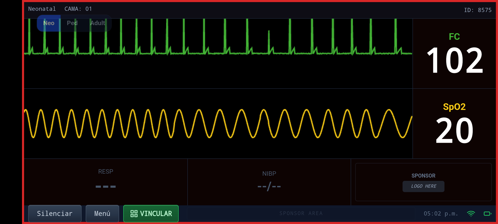
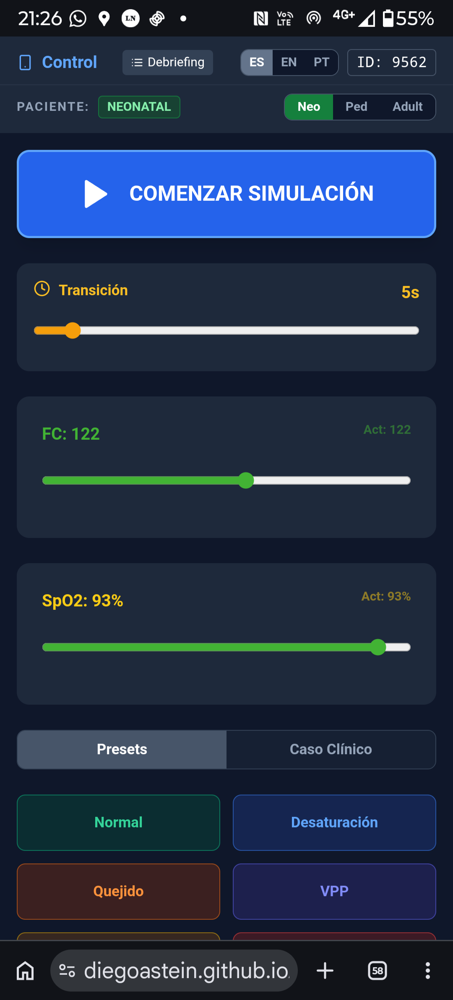

Convertí cualquier dispositivo en un monitor de signos vitales de alta fidelidad. Para neonatólogos, intensivistas, pediatras, emergentólogos y estudiantes. Sin costo. Sin registro.

Si trabajás con pacientes o los estudiás, NeoMonitor es para vos.
Reanimación neonatal, RCP, VPP. El origen de la app.
Simulación pediátrica con parámetros ajustados por edad.
Escenarios de adultos para entrenamiento clínico general.
UTI pediátrica y adultos. Casos críticos de alta complejidad.
Escenarios de emergencia con alarmas y presets rápidos.
Aprendé a leer monitores reales sin equipos costosos.
Alumnos, docentes y escuelas de enfermería. Lectura de monitor y respuesta ante alarmas.
Entornos formales e informales. Sin setup técnico, sin costos.
Abrí neomonitor.pro en una tablet o PC conectada al proyector. Elegí "Modo Monitor".
Desde tu teléfono, abrí la misma web y elegí "Modo Control". Todo en el mismo navegador.
Escaneá el código QR que aparece en el monitor con la cámara de tu celular. También podés ingresar el código de 4 dígitos manualmente.
FC y SpO₂ con sliders fluidos. Transición suave y configurable.
Alarmas visuales y sonoras para entrenar la respuesta ante emergencias.
Escenarios pre-configurados: Normal, Desaturación, Quejido, VPP y más.
Herramienta de retroalimentación para cerrar el loop educativo.
Español, Inglés y Portugués. Ideal para cursos internacionales.

Casos clínicos, tips de simulación y novedades del proyecto.
@neomonitor.pro
Seguir ahoraActualizaciones · Casos reales · Comunidad
Abrí el link en dos dispositivos y en 60 segundos ya estás simulando.
neomonitor.proFunciona en iOS · Android · Web